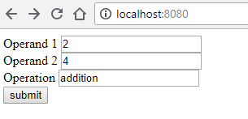

Question: What is HTTP? Does it have methods??
HTTP is a protocol designed to enable communication between clients and servers. It has several methods, such as GET and POST.
- GET: this method is used to request data from a specified server
- POST: this method is used to send data to a server
More details:Â Â
https://www.w3schools.com/tags/ref_httpmethods.asp
Task1: Write a node.js server that accepts requests from clients and responds with strings:
* Respond with "hello FIT2095" when a GET request is made to the homepage
* Respond with "my name is Tim" when a GET request is made to '/whatsyourname' path
*Respond with "Request not Found" when a GET request is made to anything else
server.js
let http = require('http');
http.createServer(function (request, response) {
const {
method,
url
} = request; // get the URL and method from the request
console.log(url, method); // print them out
if (url === '/') // if homepage: http://localhost:8080
{
response.writeHead(200); // 200 status code means OK; have a look: https://en.wikipedia.org/wiki/List_of_HTTP_status_codes
response.write('hello FIT2095');
response.end();
} else if (url === '/whatsyourname') // this is the case when the user navigates to http://localhost:8080/whatsyourname
{
response.writeHead(200); // 200 status code means OK; have a look: https://en.wikipedia.org/wiki/List_of_HTTP_status_codes
response.write('my name is Tim');
response.end();
}else // for any thing else
{
response.writeHead(404); // 404 status code means Not Found;The requested resource could not be found but may be available in the future. https://en.wikipedia.org/wiki/List_of_HTTP_status_codes
response.write('Request not Found');
response.end();
}
}).listen(8080);
to run, type this command in your terminal:
node server.js
Task 2: Write a node.js server that returns the results of the basic arithmetic operations.
- the four operations are the addition, subtraction, division, and multiplication
- the operation is provided in the pathname of the URL
- the URL contains two parameters represent the two operands of the operation
Example:
http://localhost:8080/addition?operand1=11&operand2=23
The server has to respond with "the result is 34"
// task 2
let http = require('http');
let urlParse = require('url');
http.createServer(function (request, response) {
const {method,url} = request; // get the URL and method from the request
// const {url} = request; <==> const url=request.url;
//const {method}=request <==> const method=request.method;
console.log(url, method); // print them out
let q = urlParse.parse(url, true).query; // lets parse the query part of the URL
let pathName=urlParse.parse(url, true).pathname; // Now we need to get the path name. i.e. /addition or /subtraction ...
if (pathName === '/') // if homepage: http://localhost:8080
{
response.writeHead(200); // 200 status code means OK; have a look: https://en.wikipedia.org/wiki/List_of_HTTP_status_codes
response.write('Welcome to my Calculator!!!');
response.end();
} else if (pathName === '/addition') {
console.log('We got addition');
response.writeHead(200);
let result = parseInt(q.operand1) + parseInt(q.operand2);
response.write('the result is ' + result);
response.end();
} else if (pathName === '/subtraction') {
console.log('We got subtraction');
response.writeHead(200);
let result = parseInt(q.operand1) - parseInt(q.operand2);
response.write('the result is ' + result);
response.end();
} else if (pathName === '/division') {
console.log('We got division');
response.writeHead(200);
let result = parseInt(q.operand1) / parseInt(q.operand2);
response.write('the result is ' + result);
response.end();
} else if (pathName === '/multiplication') {
console.log('We got multiplication');
response.writeHead(200);
let result = parseInt(q.operand1) * parseInt(q.operand2);
response.write('the result is ' + result);
response.end();
} else {
console.log('We got Error');
response.writeHead(404); // 404 status code means Not Found;The requested resource could not be found but may be available in the future. https://en.wikipedia.org/wiki/List_of_HTTP_status_codes
response.write('Request not Found');
response.end();
}
}).listen(8080);
Task 3: Write a node.js server that returns the results of the basic arithmetic operations.
- the four operations are the addition, subtraction, division, and multiplication
- both operands and the operation should be sent through POSTÂ HTTP requestÂ
server.js
// task 3
let http = require('http');
var fs = require('fs');
let urlParse = require('url');
const {
parse
} = require('querystring');
http.createServer(function (request, response) {
var filePath = './index.html';
const {
method,
url
} = request; // get the URL and method from the request
// const {url} = request; <==> const url=request.url;
//const {method}=request <==> const method=request.method;
console.log(url, method); // print them out
let q = urlParse.parse(url, true).query; // lets parse the query part of the URL
let pathName = urlParse.parse(url, true).pathname; // Now we need to get the path name. i.e. /addition or /subtraction ...
if (pathName === '/') // if homepage: http://localhost:8080
{
fs.readFile(filePath, function (error, content) { // send the home page back to the user
// use the fs package to read the file index.html from the local drive
response.writeHead(200, {
'Content-Type': 'text/html'
});
response.end(content, 'utf-8');
});
} else if (pathName === '/calculate') {
console.log('We got post');
if (request.method === 'POST') {
let body = '';
request.on('data', chunk => {
body += chunk.toString();
});
request.on('end', () => {
let items = parse(body); // convert the data into an object. i.e. {operand1=3,operand2=10}
let result = 0;
switch (items.operation) {
case 'addition':
result = parseInt(items.operand1) + parseInt(items.operand2);
break;
case 'subtraction':
result = parseInt(items.operand1) - parseInt(items.operand2);
break;
case 'division':
result = parseInt(items.operand1) / parseInt(items.operand2);
break;
case 'multiplication':
result = parseInt(items.operand1) * parseInt(items.operand2);
break;
default:
result = 'Operation is Undefined'
}
response.write('the result is ' + result);
response.end();
});
}
} else {
console.log('We got Error');
response.writeHead(404); // 404 status code means Not Found;The requested resource could not be found but may be available in the future. https://en.wikipedia.org/wiki/List_of_HTTP_status_codes
response.write('Request not Found');
response.end();
}
}).listen(8080);
Notes
- Line 38, registers a callback listener to the 'on data' event. In other words, if new data arrives from this post request, invoke this method.
- Line 38 uses the arrow '=>' notation
- Line 42, register another callback that will get executed at the end of the data.
- Line 43, uses the function 'parse' which is imported from the package 'querystring' (see lines 5-7)
- The output of this function is an object that contains the attributes and their values
index.html
<!doctype html>
<html>
<body>
<form action="/calculate" method="post">
Operand 1 <input type="number" name="operand1" /><br />
Operand 2 <input type="number" name="operand2" /><br />
Operation <input type="text" name="operation" /><br />
<button>submit</button>
</form>
</body>
</html>
Note:
- One way to send data to the server using POST request is by using the form and submit button.
- The attribute action represents the pathname
- the attribute method represents the type of the request, which is in this case 'POST'
- The button 'submit submits the data to the server
- The name attribute in the input component is the key while the user's input for that input is the value of the pair.
For example:
If we have this input:

the value of variable body (line 37 @ server.js) will be a string:
"operand1=2&operand2=4&operation=addition"
and the value of variable items (line 43 @ server.js ) will be an object:
{operand1: "2", operand2: "4", operation: "addition"}
To run task3, you have to install an external package called 'querystring' using the npm command:
npm init
npm install querystring --save
Option --save will include entry to the list of dependencies in the package.json file
Now, let's run our server
node server.js